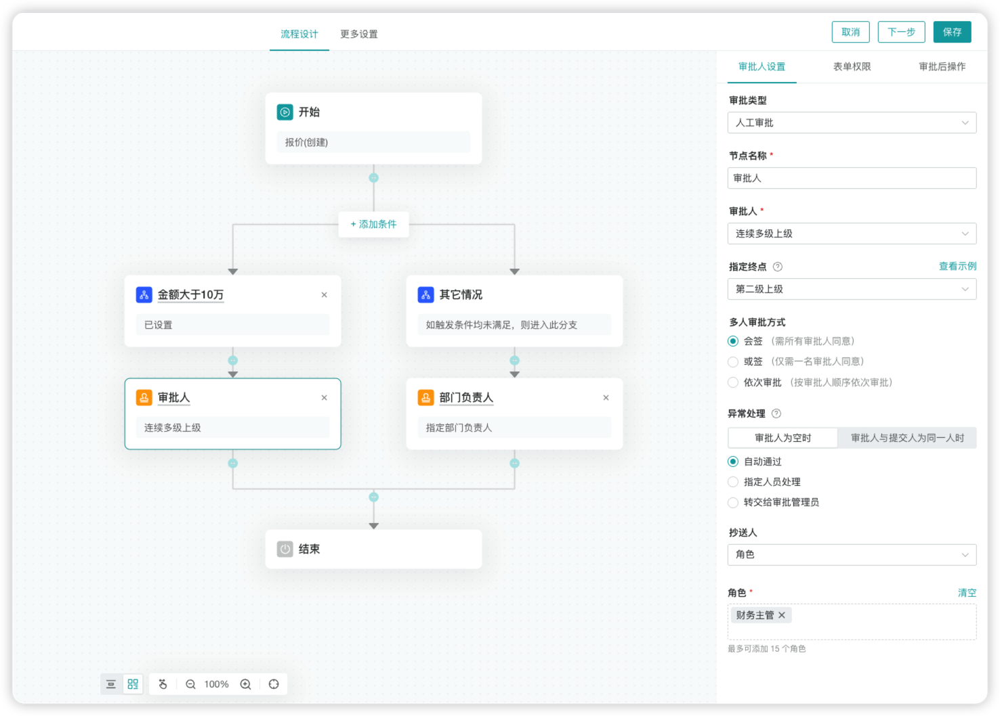
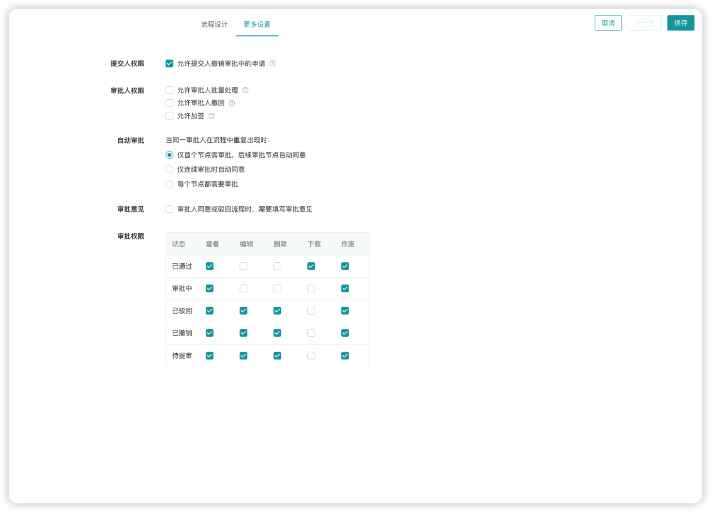
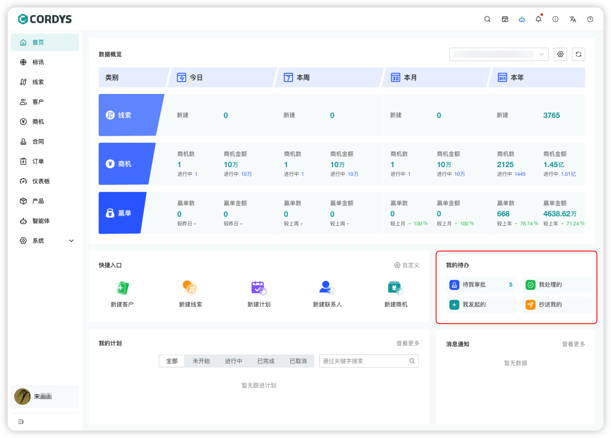
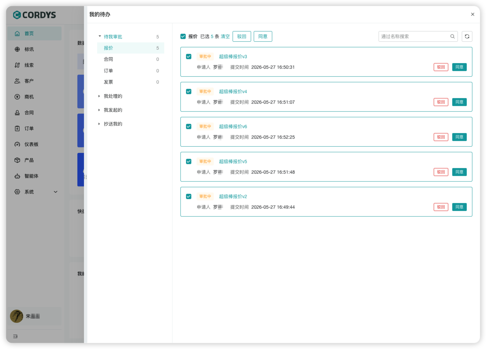

2026年5月29日，Cordys CRM开源AI CRM系统正式发布v1.7.0版本。
在这一版本中，Cordys CRM系统新增了灵活可配置的“审批流”功能，并且支持报价、合同、发票、订单四大模块按照条件分支、多级、会签等规则自定义审批流，同时审计记录全程可追溯。另外，系统首页新增“我的待办”功能，用户可以集中处理审批事项，进一步规范业务流程，提升办公效率。除此之外，Cordys CRM v1.7.0版本也结合社区用户的实际反馈完成了多项功能优化与问题修复。
亮点更新
■ 流程设置新增审批流功能
Cordys CRM v1.7.0版本重磅上线“审批流”功能，为用户强化业务合规管控、破解销售流程卡点提供帮助。在报价、合同、发票、订单等业务的每一个关键节点，Cordys CRM均支持企业根据自身业务规则灵活配置流程，实现从提交到结办的全链路可控。通过配置审批流，用户可以在保障业务流转高效畅通的同时，沉淀完整的业务数据、提前拦截潜在风险，并且实现每一步业务操作的合规可追溯。
Cordys CRM的审批流功能提供了丰富的配置项，能够适配全场景审批规则：
● 条件分支自定义：可根据表单字段设置分流规则，例如报价单可按照“金额＞10 万”自动触发多级上级审批，其他情况直接走部门负责人审批，不同场景的流程无需重复搭建；
● 审批模式自定义：支持连续多级上级、指定负责人等审批人设置，提供会签、或签、依次审批等多种模式可选，还能配置审批异常自动通过规则，特殊场景也能顺畅流转；
● 表单权限自定义：支持对表单字段进行精细化的权限配置，可以针对不同审批节点设置隐藏、查看、编辑三种权限，敏感数据可按需隐藏；
● 审批后操作自定义：支持对不同审批结果设置自动更新操作，减少人工干预。

▲图1 Cordys CRM审批流设计界面
在审批流的权限控制方面，新版本Cordys CRM提供精细化的状态控制。在节点权限设置方面，针对已通过、审批中、已驳回、已撤销、待提审等流程状态，支持用户单独配置查看、编辑、删除、下载及作废权限，操作权限一目了然，有效杜绝流程风险；同时，系统支持审批人批量处理、撤回、加签，还可以设置自动审批规则，同一审批人重复出现时可仅首个节点审批，后续节点自动同意，大幅减少重复审批操作。

▲图2 Cordys CRM支持审批流权限控制
■ 报价、合同、发票、订单四大模块新增审批记录功能
在Cordys CRM的审批流中，每一次提交、审批、意见都被完整记录在案，成为业务合规的“数字档案”。审批轨迹全程透明，每一位审批人的操作时间、审批状态、审批意见等信息全程可追溯；审批附件与审批记录绑定存档，后续在财务核对、法务复盘时可以直接在审批流中找到相关依据；系统提供会签、或签、加签模式，可适配复杂业务场景；此外，抄送人可以按需查看审批记录，关键信息高效同步。
▲图3 Cordys CRM支持查看完整审批记录
■ 首页新增“我的待办”功能
Cordys CRM v1.7.0版本在系统首页新增“我的待办”模块，以实现核心审批场景的集中管理：
● 待我审批：需要处理的报价、合同、订单等申请，直接按类型分类展示，不需要在不同模块查找审批单；
● 我处理的：参与审批的单据，流程进度随时可查；
● 我发起的：自己提交的审批申请可实时追踪审批节点动态，无需反复催问进度；
● 抄送我的：所有相关的审批抄送信息集中展示，关键业务动态不遗漏。

▲图4 Cordys CRM首页新增“我的待办”模块
在“待我审批”列表中，按照业务类型进行分类（报价、合同、订单、发票），用户可以快速筛选处理不同类型的审批，避免无效查找。同时，系统支持一键勾选多条单据，批量执行“同意”或“驳回”操作。

▲图5 “待我审批”列表支持按业务类型快速筛选
功能优化
■ 优化（合同）：合同模块增加合同阶段看板模式；
■ 优化（订单）：订单模块增加订单状态看板模式；
■ 优化（性能）：全量导出数据性能优化；
■ 优化（通用）：初始化表单视图优化。
问题修复
■ Bug（产品）：修复产品详情删除附件未校验权限的问题（#2429）；
■ Bug（合同）：修复合同收到回款后未展示回款记录的问题（#2102）；
■Bug（系统）：修复商机表单显隐规则未生效的问题（#2128）。
■ Bug（系统）：修复部分接口的XSS安全漏洞（#2239）。
■ Bug（系统）：修复部分接口的查询排序字段存在的SQL注入漏洞 。